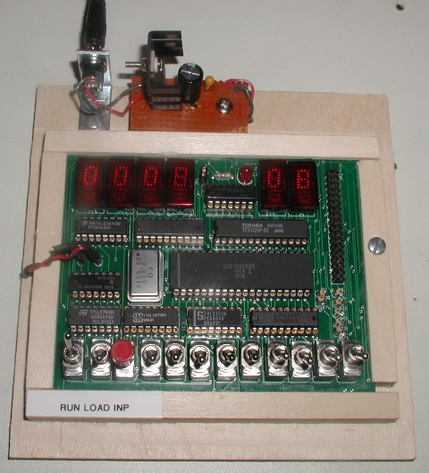

My very own MicroElf, designed by Mike Riley.
The Plan is to build an interface card for my System-5 machine and use all the cards on the System-5 bus (video, keyboard, etc) and use the MICROELF as a front- panel/CPU. As well as an interface to the 36 pin connector, the MICROELF memory needs to be disabled (perhaps just removed) so System-5 memory is used.

The little card at the top is a 7805 based voltage regulator.